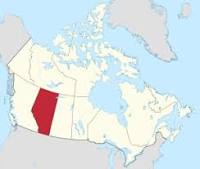

tudo sobre a província canadense de Alberta
Alberta
Alberta é uma das dez províncias do Canadá. Com uma população estimada de 4 067 175 habitantes em 2016, Alberta é a quarta província mais populosa do país e a mais populosa das três províncias das pradarias. Sua área é de aproximadamente 660 mil quilômetros quadrados, o que torna Alberta a sexta maior subdivisão canadense por extensão territorial. Antigamente Alberta e a província vizinha, Saskatchewan, eram distritos dos Territórios do Noroeste, até que se estabeleceram como províncias em 1 de setembro de 1905.